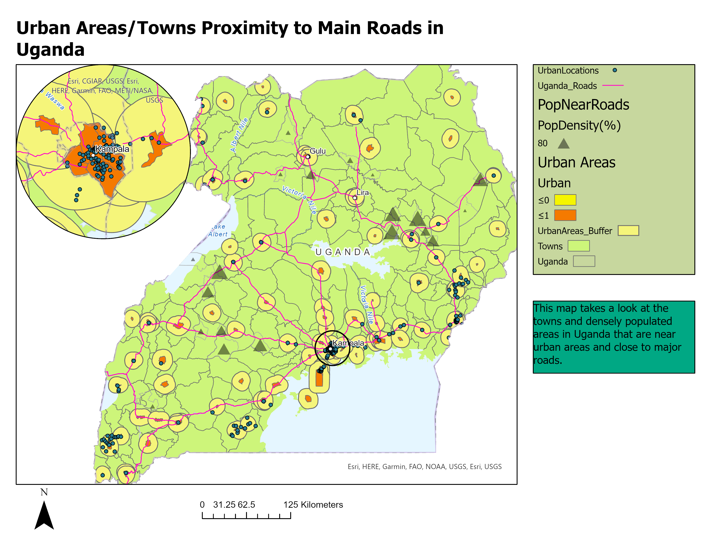

Urban Poverty in Kampala, Uganda
With an ever-growing population rural-urban migration will continue to rapidly increase. In 2008 it was estimated that about half the world’s population (3.3 billion) would be urbanites, and that this number will continue to grow in the coming decades (Sheuya, 2008). This growth, however, is predicted to largely take place in developing countries and would not take the same form as the high economic growth rates experienced by developed nations (Sheuya, 2008). In fact urbanization in the developing world is viewed to be synonymous with slum formation (UN-HABITAT, 2006). According to Sheuya (2008), “In 2005, about 1 billion people—a third of the world population—lived in slums: Asia was leading with 518 million people, followed by sub-Saharan Africa with 199 million, and Latin America and the Caribbean with 134 million” (Sheuya, 2008, p. 298). This tells us that urbanization in these regions produces negative affects leaving the disenfranchised alone and desperate as they lack the services and resources. The following essay will look at such a case, discussing urban poverty in Uganda’s capital city Kampala. It will argue that the reasons for urban poverty in Kampala are a lack of accessibility to various resources and the costs associated with various services. The responses to these issues will also be looked at, highlighting the changes that these settlements wish to be made and what they have done to bring them about.
Uganda’s capital city, Kampala, like many other cities in the developing world is experiencing an increase in population and in the development of peri-urban settlements (Kulabako, Nalubega, Wozei, & Thunvik, 2010). The average annual residential growth rate has been predicted to be at 5.6% (Nyakaana & Lwasa, 2007), with the total population nearly doubling during the day as workers commute from nearby areas. Kulabako et al. (2010) attest to this stating that the population “almost doubles during the day since the city serves as a workplace for residents of several nearby areas who return home in the evening” (p. 232). This increase in population as you can assume has led to an increase in demand for employment, housing, social services and infrastructure. This development in Kampala, however, has occurred in a haphazard manner as Nyakaana and Lwasa (2007) note stating that it has led to the “unsustainable utilization of natural resources within the metro area resulting in environmental degradation through solid waste accumulation, wetland encroachment and destruction, water pollution and land use/cover change (p. 1). This led to the conditions that poor residents in peri-urban settlements find themselves in where they fall victim to poor sanitation, inadequate housing, poorly managed solid and human wastes, increased water pollution and reduction in ecological services” (Nyakaana & Lwasa, 2007, p. 1). The following paragraphs will define urban poverty in the context of the residents within Kampala’s peri-urban settlements and will dig deeper into the various issues faced by the urban poor living within Kampala.
Consequences of the urban poverty in Kampala include rampant illnesses that arise as a result of unhealthy living conditions. These conditions are often prevalent in slums where conditions are often subpar. Sheuya (2008) attests to this stating that “[l]iving in slums under conditions of urban poverty is a major cause of ill health” (p. 298). To give a better understanding of this slums, as defined by UN-HABITAT (2003) are characterized by the following: a lack of basic services, substandard housing or illegal and inadequate building structures, overcrowding and high density, unhealthful living conditions and hazardous locations, insecure tenure, irregular or informal settlements, poverty and social exclusion. This is true in Kampala where an estimate of over 60% of the city’s population live in peri-urban settlements characterized by high population density, found in valleys and wetlands, lack legal status as residential houses, and are mainly occupied by the urban poor. Kulabako et al. (2010) writes, “[t]he impoverished peri-urban locals have inadequate or even lack basic services such as water supply, and facilities for safe management of excreta, solid waste, greywater and storm water, resulting in unhealthy environmental conditions” (p. 232). Diseases associated with poor sanitation practices such as diarrhoea and cholera are also present within the city (Kulabako, Nalubega, Wozei, & Thunvik, 2010). One condition faced by these residents is a lack of accessible clean water.
The lack of accessibility to clean water sources is one faced by the urban poor in Kampala. Kulabako et al. (2010) write “[a]lthough the majority of residents in peri-urban settlements have access to piped water, they have water supply issues that need to be addressed” (p. 237). The inability to pay the rates associated with private connections is one reason for this lack of access. A study done of the various settlements found that these costs led residents to use “alternative unsafe resources” (Kulabako, Nalubega, Wozei, & Thunvik, 2010, p. 237). Populations in the city’s informal settlement rely on water springs due to their accessibility and lack of costs associated with their extraction. These springs, however, as Kulabako et al.’s (2010) study highlighted were contaminated by fecal matter leading to outbreaks of cholera and other diseases. A testament to the lack of sanitation in these peri-urban settlements as the main means of excreta disposal were pit latrines, which were cheap and addressed the lack of sewer lines and other options (Kulabako, Nalubega, Wozei, & Thunvik, 2010). Other services such as waste management were lacking in these settlements.
Kulabako et al. (2010) also looked at solid waste management efforts and found that collection services in Kampala’s peri-urban settlements were inadequate as these households were located in locations that could not easily be accessed and could not afford the costs associated with waste collection. As a result the residents resorted to “open dumping wherever there is available open space, e.g. behind houses and on the banks of open drains” (Kulabako, Nalubega, Wozei, & Thunvik, 2010, p. 242) leading to the creation of landfills in close proximity to households. These issues and the consequences they bring about are dire and need to be addressed to make the living conditions of the urban poor healthier. Although there have not been great steps made toward bringing this change about some action has been taken to address a few issues.
In regards to the response to the problem various goals for international development are set to improve the lives of those living in intolerable conditions. According to Sheuya (2008), the goals of international development include:
Health and improving the lives of people living in slums are priority goals for international development. Three of the Millennium Development Goals (MDGs) directly focus on health: goal 4 (reduce mortality of children younger than 5 years), goal 5 (improve maternal health), and goal 6 (combat diseases, including HIV/AIDS, malaria and other diseases). Goal 7 focuses on ensuring environmental sustainability. Targets 10 and 11 of the goal focus on halving the proportion of people without sustainable access to safe drinking water and sanitation and improving the lives of people living in slums, respectively. Goal 1 (eradicate extreme poverty) is cross-cutting: It determines and is at the same time determined by the success of the other goals. (p. 299)Here we can see that there are clearly defined goals set out to improve the conditions of the urban poor. However, this reality is not present in Kampala as the conditions they face are still present and even beyond the capacity of the local government. Kulabako et al. (2010) write, “[t]he capacity of the local government authority […] to provide the desirable level of service to meet the needs of the increasing population and maintain hygiene and beauty of the city is currently limited” (p. 232). Confirming the previous point. To accurately respond to these issues requires government initiative to improve the provision of basic services, and for community hygiene practices to meet both the socio-economic and environmental needs of these settlements (Kulabako, Nalubega, Wozei, & Thunvik, 2010). There however, have been local methods employed and recommendations by residents to address some of the issues regarding sanitation and waste disposal.
The local response to the sanitation issue of water has been to boil it prior to drinking it, this however still poses a challenge as fuel (mainly charcoal) is costly and also compromises the drinking water (Kulabako, Nalubega, Wozei, & Thunvik, 2010). To better address this issue residents wished to see: improvements in the extension of piped water supply, reduced costs, and water quality improvement (Kulabako, Nalubega, Wozei, & Thunvik, 2010). Regarding local action taken in addressing the lack of adequate waste management, the residents in these settlements undertook waste scavenging practices and even organized into associations, such as the Quality Scavengers Association, which collected valuable items from landfills and then sold them to recyclers (Kulabako, Nalubega, Wozei, & Thunvik, 2010). This served as a method to address the issue regarding waste. NGOs as well as government bodies and local councils also worked to educate households on solid waste handling, but its effects were small and only reached a few (Kulabako, Nalubega, Wozei, & Thunvik, 2010).
In conclusion, Kampala, the capital city of Uganda, has undergone rapid rural-urban migration in the past few years. This led to a rapidly growing urban population that local infrastructure and services could not keep up with. The result of this being a high population of residents who find themselves lacking in their accessibility to clean water, healthy sanitation practices, waste removal and have become subject to various diseases (e.g. cholera and diarrhoea). Action taken to address these issues has been limited and merely on a local level by a few. Further action is required on the part of the local government to address these issues as there is much more that is still to be done to better the conditions of those living in these settlements.